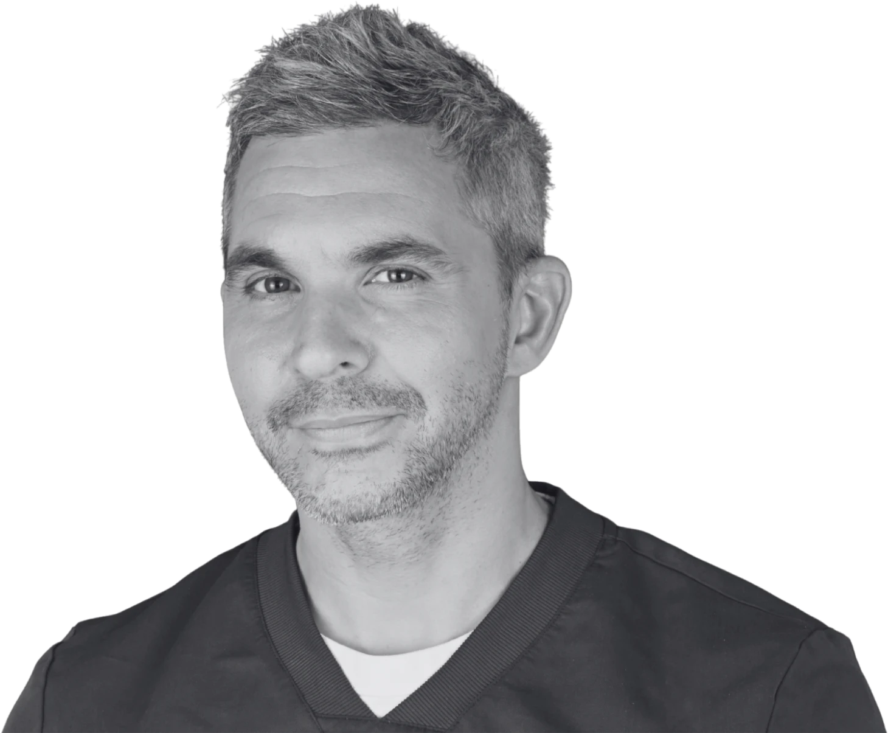

Accueil › Planification et réalisation d’un traite
Planification et réalisation d’un traitement par facettes en céramique
Un projet esthétique numérique, une orthodontie qui prépare le terrain, puis quatre facettes minimalement invasives : ce cas montre comment le résultat recherché peut guider les étapes qui le précèdent.

Praticien hospitalier, Pitié-Salpêtrière · CMME, Sainte-Anne

1 / 5
La situation initiale
Dans ce cas, le projet esthétique n’a pas seulement servi à montrer le résultat au patient : il a déterminé la position que les dents devaient occuper avant la pose des facettes.
La situation initiale
Le patient consulte parce qu’il est complexé par son sourire et par la forme de ses dents.
La demande porte donc sur l’apparence des dents antérieures, et non sur une gêne fonctionnelle.
Avant d’envisager la moindre restauration, la première étape a été de définir le sourire recherché.
2 / 5
Définir le projet final
Commencer par définir le projet final
Un projet esthétique numérique a été réalisé avec SmileCloud, à partir des photographies du patient.
Ce projet n’est pas une illustration. Il sert à réfléchir aux formes et aux proportions que devront avoir les dents à la fin du traitement, à visualiser ce résultat avant de commencer, et à guider les étapes qui suivent.
Sur la photographie du projet, l’appareil orthodontique est en place : il fait partie du traitement, à l’étape décrite ci-dessous.
3 / 5
Une orthodontie guidée par le projet
Une orthodontie guidée par le projet prothétique
La planification initiale a permis de déterminer où les dents devaient idéalement être positionnées pour le futur traitement par facettes.
Une orthodontie pré-prothétique a donc été réalisée, afin d’amener les dents dans une position plus favorable au projet restaurateur.
L’intérêt est direct : cette étape évite de demander ensuite aux restaurations de compenser seules une position dentaire défavorable. Déplacer une dent ne retire pas de tissu dentaire ; l’épaissir ou la préparer, si.
C’est exactement le principe du gradient thérapeutique : éclaircir → déplacer → ajouter → restaurer → préparer lorsque cela devient nécessaire. Déplacer lorsque cela est pertinent, avant de préparer.
4 / 5
Quatre facettes, et le résultat
Quatre facettes minimalement invasives
Une fois les dents replacées, le projet a été réalisé avec quatre facettes en céramique Empress Multi, selon une approche minimalement invasive.
Réalisation prothétique : Labeldent — Sophie Dallem.
Le résultat
Le résultat correspond au projet esthétique construit en amont : la forme et les proportions décidées au moment de la planification sont celles que l’on retrouve en bouche.
5 / 5
Ce que ce cas permet de comprendre
Ce que ce cas permet de comprendre
La planification esthétique peut influencer le traitement bien avant la réalisation des facettes. Dans ce cas, le projet numérique a guidé le positionnement orthodontique préalable des dents afin de permettre ensuite la réalisation de quatre facettes minimalement invasives.
Les photographies du cas


Les photographies présentent des situations cliniques individuelles. Le traitement et le résultat dépendent de la situation initiale et ne peuvent être transposés à un autre patient sans examen clinique.
Envisager un projet esthétique
La consultation esthétique permet d’analyser la situation initiale, de construire un projet et de discuter les étapes nécessaires pour l’atteindre.
Prendre rendez-vous